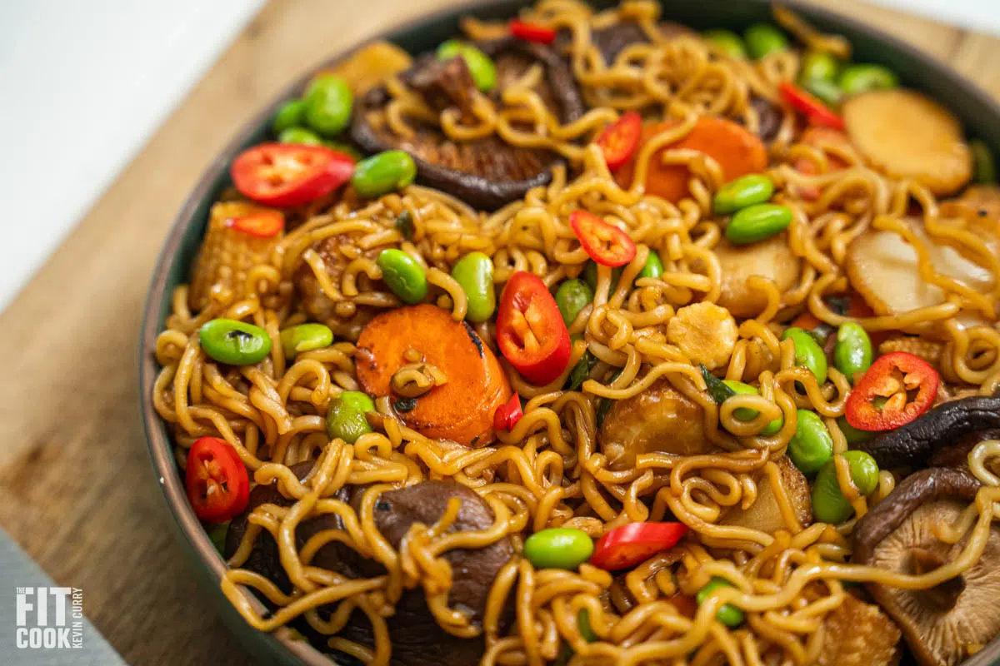

Vegan Ramen Bowl

Delicious and healthy ramen bowl that will leave you speechless !
Description
This is a recipe for 2 servings of 327g for a total of 460 calories/serving that can be done in 20min
Ingredients
- 1oz dried shiitake mushrooms
- 1/2 cup carrot, thinly chopped
- 10oz bamboo shoots, chopped into 2-inch pieces
- 4oz water chestnuts, drained
- 2 green onion stalks, chopped
- 1 cup shelled edamame
Sauce
- 1 tablespoon low sodium soy sauce
- 2 tablespoons mirin
- 1 tablespoon maple syrup
- 1 tablespoon avocado oil
Optional garnish
- red fresno peppers, chopped
- green onions, chopped
Steps
- Bring a pot of water to a boil and add noodles. Once cooked to your satisfaction, drain and set aside. Should take no more than 4 minutes.
- Hydrate the shiitake mushrooms by placing them in hot water for 30 minutes. Then pat them dry on a paper towel to prep them for searing.
- Set a wok on high heat and once it is hot, spray with avocado oil. Add the carrots and cook for about 1 – 2 minutes to soften.
- Then add the shiitake mushrooms and saute with the carrots for 1 – 2 minutes. Monitor the heat and ensure nothing is burning.
- Then add the remaining veggies and toss together.
- Once sear marks appear on the veggies (about 2 – 3 minutes), reduce the heat to low. Add the edamame and toss together.
- Add the noodles and pour in the sauce.
- Use tongs to toss the veggies and noodles together in the sauce.
- Serve immediately, garnish and enjoy!